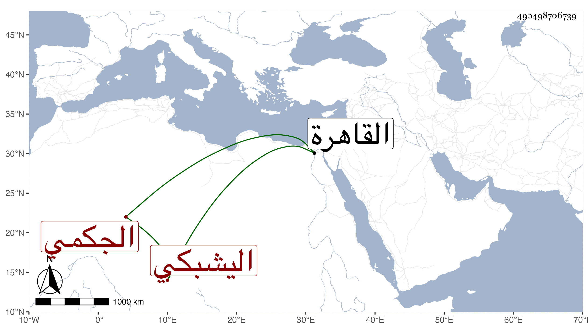

0902Sakhawi.DawLamic.ITO20230111-ara1.EIS1600.490498706739
Biography ID: 490498706739
249
جانبك اليشبكي يشبك الجكمي . صار بعده خاصكيا في الدولة الأشرفية برسباي ثم ساقيا في الظاهرية ثم تأمر عشرة بعد سنة ثمان وأربعين وصار رأس نوبة ثم ولي ولاية القاهرة على كره منه والججوبية ثم أضيفت له الحسة في سنة أربع وخمسين ثم عزل عنها بعد مدة ، واستمر على الولاية إلى أن نقله الأشرف اينال إلى الزردكاشية بعد القبض على لاجين الظاهري فلم يباشرها بل مرض ولزم الفراش أياما قليلة ثم مات في ربيع الاول سنة سبع وخمسين ، وهو في أوائل الكهولة ودفن بتربة طيبغا الطويل بالصحراء ، وكان مشكور السيرة في أحكامه مع ظرف ورشاقة ومعرفة بأنواع الفروسية ومشاركة في الفضائل وحسن محاضرة وذكاء ويقظة بحيث كان نادرة في أبناء جنسه عفا الله عنه .
